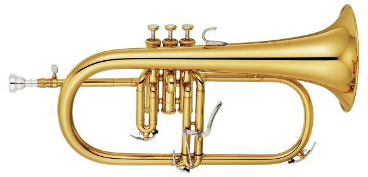

The B-Flat Trumpet
In the 19th century, the keyed trumpet was gradually phased out and replaced with the valved B-Flat cornet. The B-Flat cornet has a conical bore, and the sound that comes from it is broader than the sound we get from a B-Flat trumpet. Virtuosos in the 1800s such as the French Jean-Baptiste Arban and the American Herbert L. Clarke authored technique books for the cornet that are used by trumpeters to this day. The cornet works exactly like the trumpet, and the only difference is its conical bore bell that creates more of a deeper sound. Today, however, most players play the B-Flat trumpet instead of the cornet.

The cornet
The B-Flat trumpet, emerged in the form we know it today around the same time as the B-Flat cornet. The main difference between this trumpet and the cornet is the trumpet has a cylindrical bore, which shoots the sound out of the trumpet more directly than the conical bore that the cornet has. In imagining this, imagine the cornet being like a wide flashlight, while the trumpet is like a direct, concentrated beam of light. As the name suggests, the B-Flat trumpet is pitched in B-Flat, meaning that the harmonic series begins on the concert B-Flat pitch. In order to simplify things, the trumpet's music is also pitched in B-Flat, so when a trumpet player plays their "C", they are truly playing a B-Flat. The Bb trumpet is in the same key as the clarinet, the tenor and soprano saxophones, and the euphonium. The Bb trumpet is the most basic of the modern trumpets, and when amateur players first start learning the trumpet, they learn the Bb trumpet. You'll see Bb trumpets in marching bands, concert bands, and jazz bands. Nine times out of ten, if you're hearing a trumpet in a non-orchestral setting, it's a B-Flat.
Another adjacent instrument to the Bb trumpet is the flugelhorn. Flugels are also pitched in B-Flat, but flugelhorns aren't usually someone's main instrument, but instead they're used for special occasions to get a certain tone quality. The flugelhorn has a very deep, mellow tone and is used mainly to get a prettier sound that you simply can't do on a trumpet. Flugels are usually seen in jazz ensembles, but sometimes you'll find them in a drum and bugle corps or in a concert band, but only as special instruments used for their beautiful tone quality.
A flugelhorn